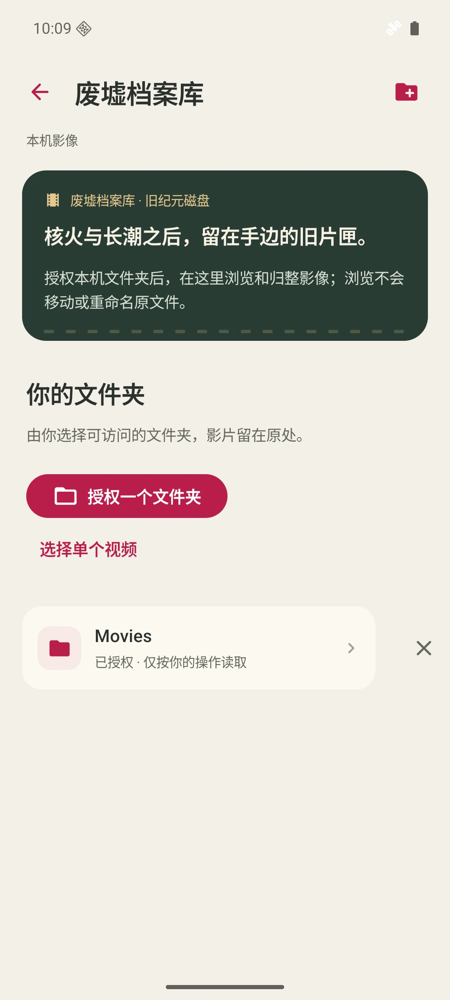
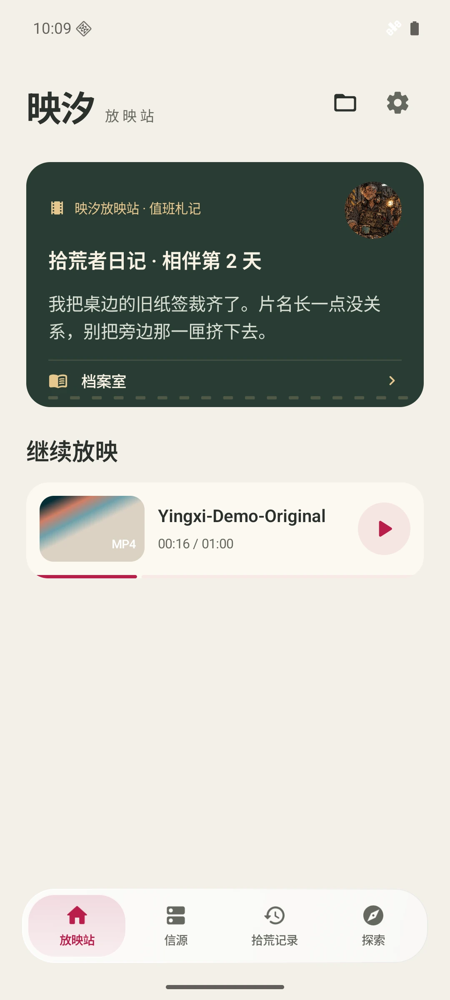
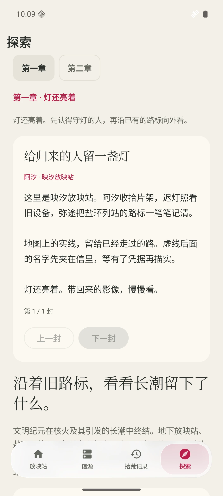
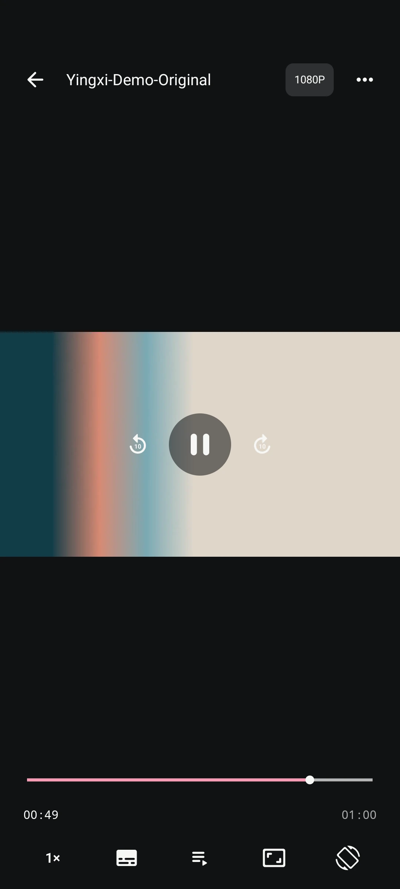
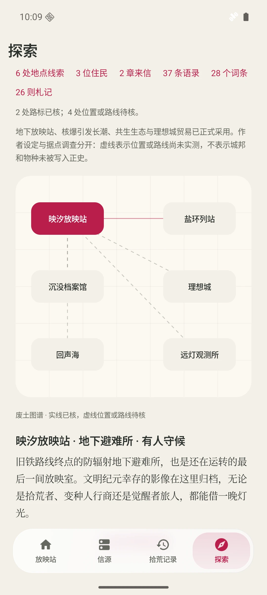

自己的片库，
打开就看。
从手机文件，到家中的 NAS。



实际界面采集自 v0.2.0-alpha.52 · Android 16
从手机文件，到家中的 NAS。
字幕、倍速、续播，按你的节奏。
来信、住民与废土图谱，随手翻开。
字幕、倍速、续播，都在顺手的位置。
免费使用，无广告打扰。

打开本机文件和文件夹。
接上自己的 SMB、SFTP、WebDAV。
或通过官方授权，浏览阿里云盘。
从哪里看，由你决定。
映汐的废土世界
文明纪元因核爆终结，长潮随后淹没旧城。
旧铁路终点的地下放映站，仍在收存旧世界的影像。
服务器、胶片与旧铁路，曾属于一个完整的世界。
核爆引发地质与气候剧变，漫长海侵淹没旧城。
避难所、盐环聚落与理想城，在废墟之间重建生活。
地下放映站收存影像，盐环列站传递来信。远处的理想城，以能源塔与净水环维系生活。
在地图里读地点、循线索。实线记下已走通的路，虚线为尚待核实的方向留白。
应用内废土地图 · alpha.52 实际界面
孢子借辐射与电磁信号生长，觉醒者感知频段。
理想城的能源塔、净水环与商队，让远处仍有灯火。
这些故事留在探索里。
想看片子，随时可以先开场。
我把松开的分册纸脊重新折好，迟灯用铜尺压住边沿。册名写在纸上，片罐还放在原来的格子里；要换一行索引，不必搬动整架影像。
我把盖沿旧布的接缝翻到内侧，线头夹进两层布里。阿汐用指腹顺着盖沿摸了一圈，才把片单的空白角压回去；纸上的片名，一笔也没擦。
我把商队带来的理想城口信写在图纸边上，没往实线上添一笔。阿汐问我走过没有，我摇头；纸边留得宽些，容得下听来的话，也容得下还没走过的路。
Android 15 / 16 个人本地播放器。免费使用，无广告打扰。
下载 Android 版查看开源项目 ↗iOS 当前为开发预览，尚未在 App Store 上架。
映汐主打纯免费、无广告的个人本地播放器。此版没有按付费档位划分功能。具体格式支持仍取决于设备、媒体文件和对应版本的解码能力。
影片来自你自己的文件，或你有权访问的局域网、服务器与网盘来源。映汐负责播放这些影像。
不需要。来信、住民与探索都由你主动打开，不增加观影等待，也不设阅读解锁门槛。
iOS 目前为开发预览，还没有 App Store 上架日期。实际进度见 iOS 版本说明。